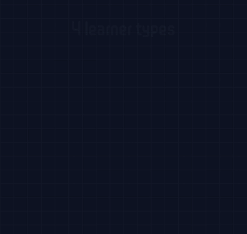
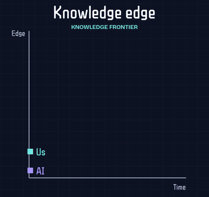
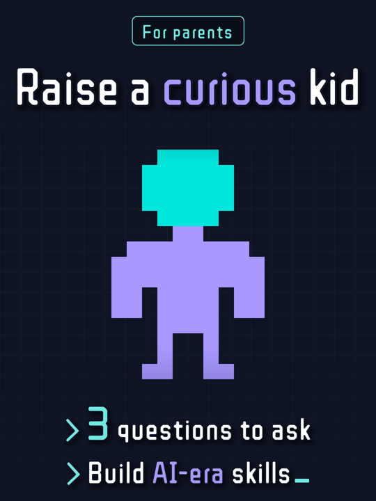
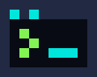

Case study · AI workflow design
I turned video editing into a workflow an AI can run, and I stay in charge.
I make weekly education videos for short-video platforms. I designed the process that edits them: written instructions an AI follows, six checkpoints where I approve the work, and a feedback loop that turns every flaw into a new rule. I also built the brand that every video carries.

The problem
Editing took hours, and "just ask the AI" wasn't reliable
A three-minute talking-head video needs retakes cut, subtitles timed, overlays placed around the speaker's face, flagged words removed for the platform, and a cover. Asked loosely, an AI guesses: it trims too much, covers the face, or overwrites the version you liked. The fix was not a better prompt. It was a clear process.
What I did
- Defined the editing workflow, stage by stage
- Wrote the playbook the AI reads before every edit
- Set the checkpoints and what I check at each one
- Reviewed every cut, layout, render and cover
- Turned each problem into a rule, and many rules into automatic checks
- Designed the brand and its rules for video
What the AI did
- Wrote most of the code, with Claude Code as my pair programmer
- Runs each stage: transcribing, cutting, subtitling, rendering
- Prepares each checkpoint as numbered lists and labelled stills
- Checks its own render before I see it
- Writes each new rule into the playbook
Define
Seven stages, each with a clear input, output and checkpoint.
Instruct
Rules with exact numbers and the reason behind each one.
Check
Nothing moves to the next stage without my approval.
Iterate
Each video's feedback becomes a rule for the next.
Brand
One visual identity, applied the same way every time.
The workflow
Seven stages, six checkpoints
Each stage says what the AI does and what I check. Text comes back as numbered lists, so I can reply "keep #3". Images come with their timestamps.
-
Intake check, before any editing
AI doesChecks the footage, script and b-roll, plus free disk space and the audio delay. Flags anything missing, and suggests b-roll for the key moments.Checkpoint 1 · I checkFill the gaps and choose the b-roll. -
Transcribe, then plan the cuts
AI doesCompares the transcript with the script. Lists each retake to remove, the expected length, and every flagged word in its sentence.Checkpoint 2A · I checkApprove or edit the cuts and word changes. -
Plan the on-screen text and visuals
AI doesProposes the title, viewpoints and the words that trigger them, key words, sound cues, sticker and photo moments, and the cover text.Checkpoint 2B · I checkApprove or edit the plan. -
Key frames before the full render
AI doesMeasures where my head sits in the frame, then renders stills of every layout moment on the real footage. Flags anything close to my face.Checkpoint 3 · I checkApprove the layout. Rendering stills first saves full re-renders. -
Render, then the AI checks its own work
AI doesRenders the video, then checks picture and sound sync, re-transcribes to catch clipped endings, measures loudness, and confirms no flagged words remain. Sends a short report.Checkpoint 4 · I checkWatch it and give feedback. Each change is a new version: v2, v3… -
Cover
AI doesAsks me for the frame or photo first, then designs the cover and checks its words.Checkpoint 5 · I checkApprove the cover. -
Wrap-up
AI doesWrites anything new it learned into the playbook. With my OK, deletes the raw footage and large working files.I checkConfirm the clean-up. The next video starts with a better playbook.
Writing for an AI
Instructions an AI can actually follow
The playbook is the heart of the project. These are the principles I used to write it.
Numbers, not adjectives
"Tighter" means something different every time. A number means the same thing on every video.
Make the pace tighter.
About 0.15 s between phrases. No silence over 0.3 s.
Every rule says why
With the reason, the AI can handle a case the rule didn't name.
Don't cut too close to words.
Each cut runs on up to 0.3 s until the voice fades. (Video 1: sentence endings were clipped.)
Hard lines, never broken
A few rules protect what matters most, and the code enforces them.
Try not to cover the speaker.
Everything at the top stays above the measured top of the head. Never overwrite a finished render.
Easy to review
A checkpoint only works if checking is quick.
Here's what I changed.
Numbered lists, so a reply can be "keep #3". Stills labelled with their timestamps.
Rules become checks
A rule that matters is backed by a warning in the code, so it can't be forgotten.
Keep animations readable.
pace_check() warns when labels run long, elements come less than 0.8 s apart, or anything is still moving 2.5 s before the end.
Example: the face rule
The first rule I made unbreakable. For each video the AI measures where the top of my head sits in the footage. Everything at the top of the screen stays above that line. Stickers sit at shoulder height, and the subtitles sit below the chin. Key frames at Checkpoint 3 confirm it before anything is rendered.
Iteration
Every flaw became a rule
After each video I reviewed the result and gave feedback. Each fix went into the playbook, so the same problem never came back. Pick a video to see what changed.
Video 1: getting the basics right
- The pace felt slow.About 0.15 s between phrases; no silence over 0.3 s.
- Sentence endings were clipped.Cuts run on until the voice fades.
- The picture was 0.6 s behind the sound.Measure the audio delay on every video, then check that picture and sound match to within one frame.
- The music was too quiet.Music sits 15 dB under the voice and dips further while I talk.
- A name was split across two subtitle lines.Names and key phrases never split.
Video 2: protecting the work
- I want to compare versions.Never overwrite a render or cover. Every change is v2, v3…, and the code refuses to overwrite.
- Photos should feel big and clear.Photos and clips fill the screen; landscape ones sit whole on a blurred copy of themselves.
- The title should be easier to read.A larger title tab that stays up for the whole video.
Video 3: richer visuals
- Some ideas needed a diagram, not a photo.Brand animations drawn in code, timed to the line they cover.
- Screenshots of articles were cropped.Documents can be set to show whole.
- I want to pick the exact cover frame.I send a screenshot, and the AI matches it to the exact frame.
Video 4: precision
- The viewpoint chips were hard to read.Chips 40% bigger, placed right beside the title.
- A word silently went missing.Cut 0.02 s before a word, never exactly on it. Whisper's timings round, and an exact cut dropped the word.
- A stray syllable survived at a join.Exact audio cuts placed in the quiet dip, checked by re-transcribing.
- Dense characters in the cover headline filled in.A thinner outline and more spacing, so dense characters stay open.
Video 5: less clutter, more automation
- The screen felt crowded.One thing at a time: chips and the bio card hide while any b-roll is up.
- The animations felt rushed.Short labels, elements at least 0.8 s apart, a still ending, all checked automatically by pace_check().
- Words vanished at a retake.A repair step re-transcribes just those stretches and splices the words back in.
- Some flagged words needed to stay readable.Words that must stay readable are respelled instead of removed.
Video 6: hierarchy and timing
- The title and the chips competed for attention.The title always reads bigger than the chips; the build warns if it doesn't.
- The bio card should come in when I introduce myself.It appears when I introduce myself, as long as no b-roll is up.
Video 7: fine-tuning
- A finished sentence merged with the next topic.After a long pause, a sentence never joins the next subtitle line.
- When I ask viewers to comment a keyword, it should stand out.The keyword shows as a pop-up under the title.
- The cover's bottom lines felt tight.More space between the lines, adjustable per video.
- One cover design is enough for now.One design per video; the second is paused but kept in the playbook.
Brand
I built the brand, then taught it to the AI
I designed the visual identity and wrote its rules for video. The AI applies it to subtitles, overlays, covers and every animation, so each video looks like part of one series.


Covers and icons, made the same way
Covers are generated from a few lines of text in the video's config, with the face kept clear in the middle. A set of pixel-art icons gives the videos their own stickers, drawn in code on a fixed grid so new ones always match.

The open-source code ships with a neutral theme. Anyone can set their own colours and fonts in one file.
Under the hood
How it works
Each stage is a small Python script that reads one config file per video.
What worked
Writing the process down before automating it. Once each stage had an input, an output and a checkpoint, the AI's work became predictable, and my reviews became quick.
What's next
Run the English pipeline end to end on real footage, and turn more playbook rules into automatic checks.